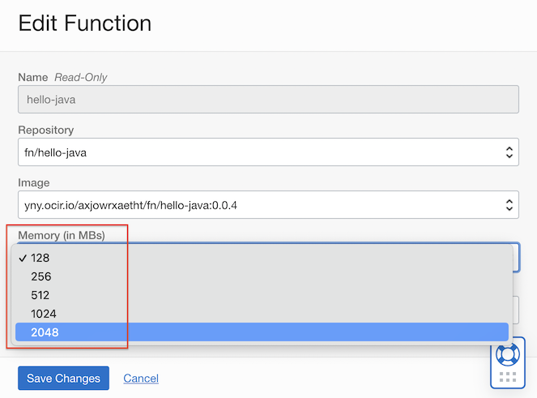

Support for 2 GB functions
Oracle Function에 대해서 최대 2GB까지 메모리를 할당할 수 있게 되었습니다.
Function은 호출 건과 사용한 메모리에 따라 가격을 산정합니다. 메모리는 초당 사용한 GB 메모리 기준 400,000 까지 무료이며 그 이상은 비용을 청구합니다. 함수 당 2GB까지 설정할 수 있지만, 비용과 관련이 있으므로 적정량만 할당합니다.
Function 메모리 설정하기
-
따로 지정하지 않는 경우 기본값으로 128MB 메모리를 할당합니다.
-
메모리 설정시 최대 2GB까지 지정할 수 있습니다. 128, 256, 512, 1024, 2048 중에 설정할 수 있습니다.
-
함수 소스 루트에 있는 func.yaml 파일에 memory: 2048과 같이 값을 추가합니다.
schema_version: 20180708 name: hello-java version: 0.0.4 runtime: java build_image: fnproject/fn-java-fdk-build:jdk11-1.0.146 run_image: fnproject/fn-java-fdk:jre11-1.0.146 cmd: com.example.fn.HelloFunction::handleRequest memory: 2048 -
fn cli로 업데이트 합니다.
fn update function --memory 1024 <app-name> <function-name>와 같이 실행합니다.fn update function --memory 2048 helloworld-app hello-java -
Oracle Cloud 콘솔에서 함수 설정화면에서 변경합니다.

-
이 글은 개인으로서, 개인의 시간을 할애하여 작성된 글입니다. 글의 내용에 오류가 있을 수 있으며, 글 속의 의견은 개인적인 의견입니다.